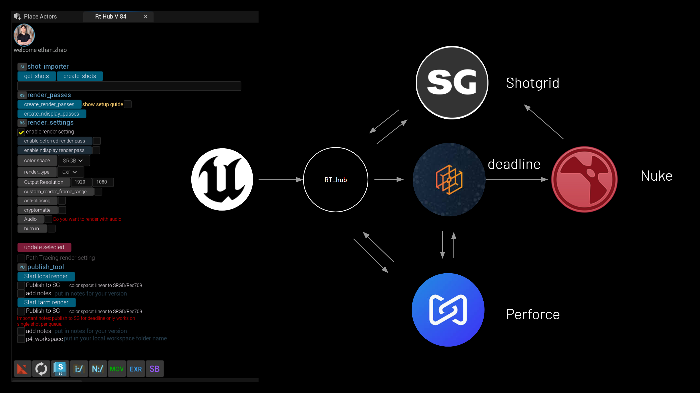

unreal vfx pipeline tool- rt_hub(v8.5)
Active Developing rt_hub, enabling Unreal to access Deadline render farm and ShotGrid.
Key functions
-
Local Render / Deadline Automation
- Fully integrated into Ingenuity Studios render pipeline structure
- Supports DeadlineService distributed rendering + Perforce integration
- Light Selects render passes automation
- nDisplay render passes automation (nDisplay-specific settings)
-
Plugin Management
- Script like
rt_plugin.pydetects and updates installed plugins - Notification popup showing which plugins were updated
- Script like
-
ShotGrid Integration
- Tools like
download_from_SG.pysync shots with SG - Authentication + token management + asset syncing between ShotGrid and Unreal
- Tools like
-
Perforce Integration
- Checks whether files are checked out or writable
- Sets up folder structures and links assets to Perforce workspaces
-
Configuration Management
- Centralized logic via
RtInfos,RenderSetting(paths, resolution, AA, Object ID types) - Makes render/asset jobs environment-independent and project-aware
- Centralized logic via
WIP functions
- OCIO support for SG mov updates (currently SG mov only has sRGB/Rec709 LUT within ffmpeg)
- Shot plates import automation with backdrop
- Additional toolset